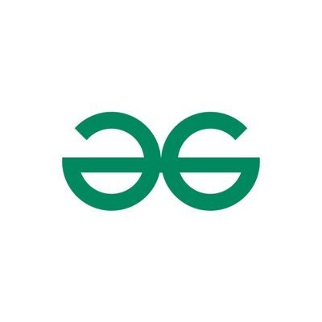

DSA Course
This course is made for people who want to learn DSA from A to Z for free in a well-organized and structured manner. The lecture quality is better than what you get in paid courses, the only thing we don’t provide is doubt support, but trust me our YouTube video comments resolve that as well, we have a wonderful community of 250K+ people who engage in all of the videos.
Notes
The Series doesn’t focus on any specific programming language. Instead, it emphasizes logic and uses pseudocode. The first two basic videos might use C++, but for Java tutorials, you can watch other YouTube videos. When tackling core problems of data structures and algorithms (DSA), the Series uses pseudocode that isn’t tied to any particular programming language. However, you can find code examples in your preferred language in the notes and articles provided.
Blogs
The Series doesn’t focus on any specific programming language. Instead, it emphasizes logic and uses pseudocode. The first two basic videos might use C++, but for Java tutorials, you can watch other YouTube videos. When tackling core problems of data structures and algorithms (DSA), the Series uses pseudocode that isn’t tied to any particular programming language. However, you can find code examples in your preferred language in the notes and articles provided.
Problems
| Problems | Status | Practise | |
|---|---|---|---|
| Valid Anagram |  | ||
| Roman to Integer | |||
| Longest common prefix |